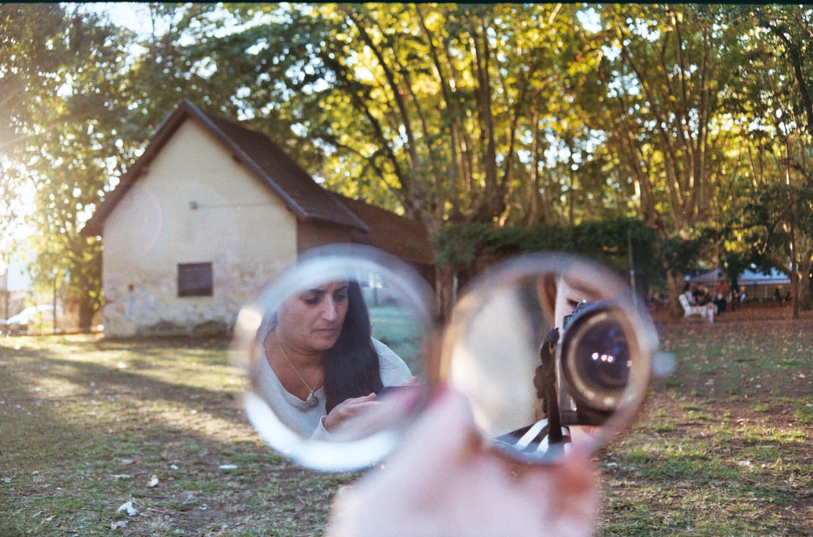
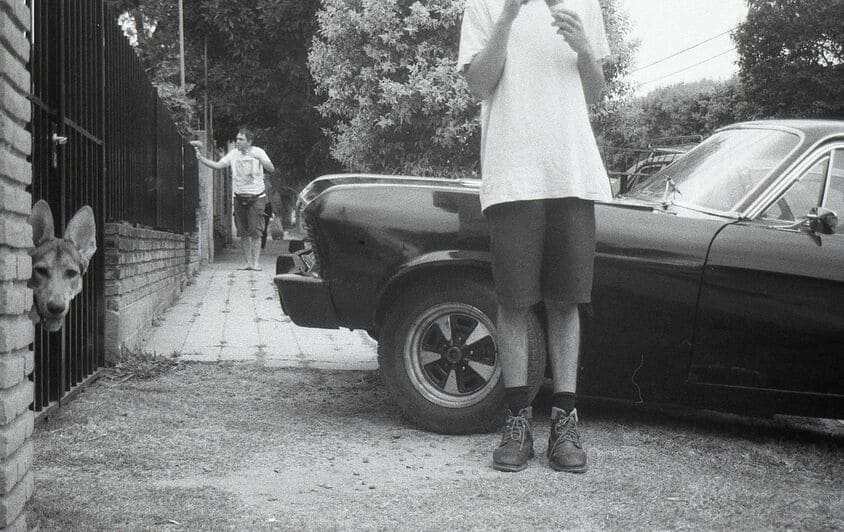
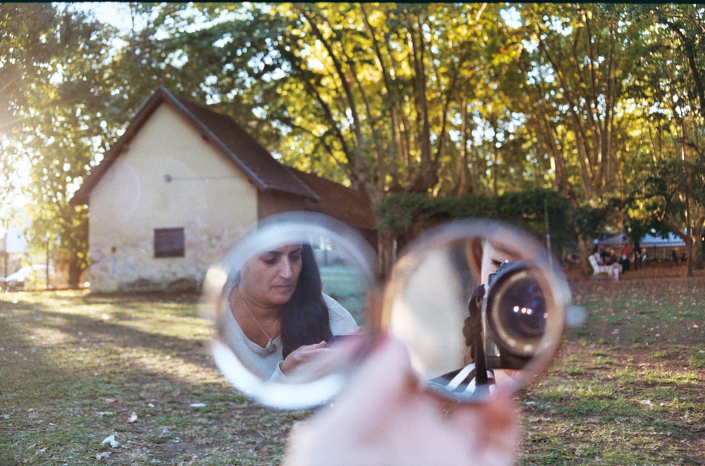
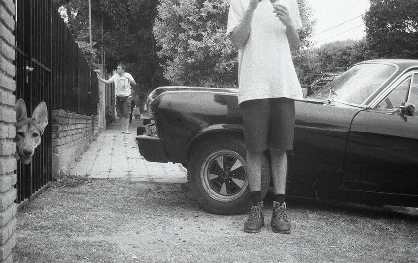

Hola! soy Ro
Analista de calidad | Proyectos Multimedia | Analista de datos

Analista de calidad | Proyectos Multimedia | Analista de datos
Soy estudiante de 4to año de Sociología, mi apasionado interés por la tecnología y las Ciencias Sociales me impulsa a expandir mi carrera profesional en el análisis de datos. Me intriga entender el mundo a través de números, gráficos y patrones, pero siempre con la mirada puesta en las historias que hay detrás y sacando conclusiones que sumen. Tengo experiencia en manejo de datos, herramientas de visualización, programación, diseño y gestión. Creo firmemente en la magia de los espacios colaborativos, donde las ideas fluyen y se enriquecen con las perspectivas de todos, por eso amo trabajar en equipo. Me encanta ser parte de procesos de diseño, donde puedo aportar mi visión analítica y creativa. Quise crear esta página para no enviar un simple PDF con mi CV, y también para que me conozcan un poco más :)
.png)

Analista de calidad en Innovación y Multimedia,
Universidad Siglo 21
2024 – actualidad | Córdoba
• Tareas de validación y análisis para asegurar la
calidad de los contenidos educativos. Control de calidad
a través de auditorías internas, identificando
herramientas y contenido faltante.
• Seguimiento y análisis de KPIs mediante Jira y otras
herramientas de gestión, aplicando metodologías ágiles.
• Corrección literaria y optimización de material
audiovisual.
• Maquetación estética y diseño web de informes y cursos
educativos.
• Diseño y desarrollo de modelos en 3D para realidad aumentada.
Secretaria Administrativa,
Conti Seguros
2022 | Córdoba
• Uso avanzado de Excel para tareas de documentación y
generación de reportes.
• Tareas de community manager y diseño gráfico.
• Facturación.
• Atención al cliente.
Representante de Soporte Técnico,
Personal
2020 | Córdoba
• Resolución de consultas técnicas y problemas de clientes
mediante asistencia telefónica y remota.
• Configuración de dispositivos, solución de problemas de
conexión y facturación.
• Análisis de incidencias recurrentes para detectar
patrones y generar reportes.
• Monitoreo de métricas de desempeño y optimización de
procesos de soporte.

Licenciatura en Sociología
Universidad Nacional de Córdoba
2019 – en curso
• Formación en análisis de datos cuantitativos, estadística y programación.
• Programación en R y SQL.
Curso de Big Data - Data Analytics
Agencia de Aprendizaje Codo a Codo 4.0
2022
• Estadística, análisis y visualización de datos con Excel, SQL, Python y Looker Studio.
Curso de Desarrollo Web
Coderhouse
2021
• HTML, CSS y programación con Javascript.
Disfruto mucho de la fotografía en general, y específicamente del proceso de la fotografía analógica. Hay algo de la espera entre
rollo empezado-rollo revelado, con los márgenes de error que no son posibles de adivinar hasta ser vistos, que lo
vuelve muy divertido para mi.
 




En mi tiempo libre disfruto de leer novelas, jugar juegos de mesa, conocer música. Soy una gran entusiasta del ajedrez y fundamentalista del café.
rocio.miranda.1322@gmail.com
351 8096032
linkedin.com/rociomiranda13